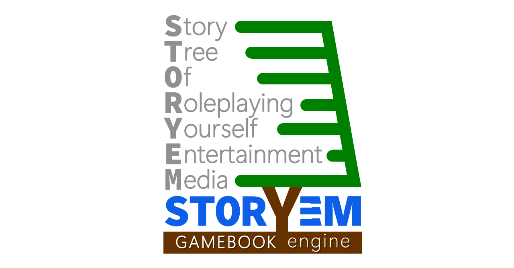
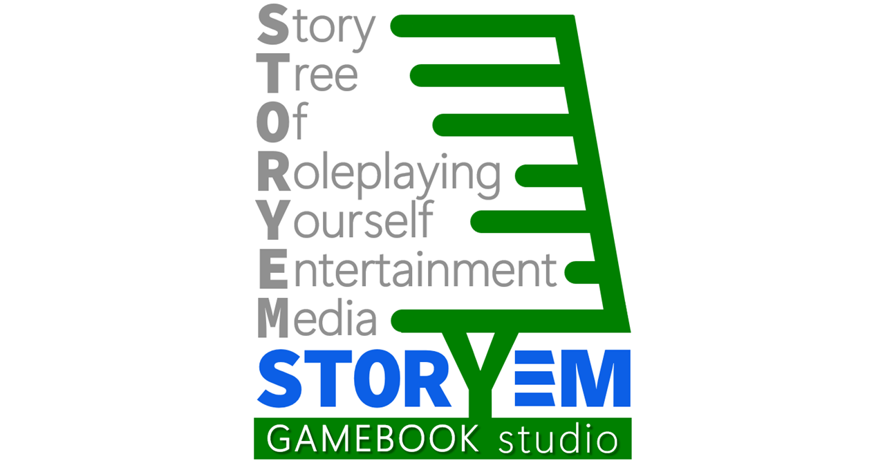
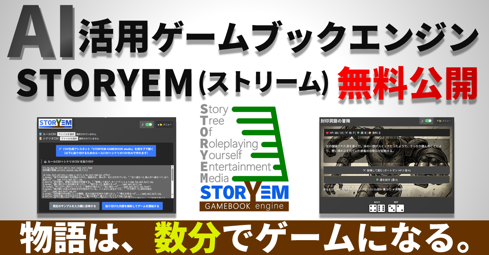

Story Tree Of Roleplaying Yourself Entertainment Media
"What if the story you imagined became a game on the spot?"
STORYEM is a tool that revives the world of choose-your-own-adventure "gamebooks" using the power of the latest AI.
No programming knowledge is required. With the Studio function that supports dialogue with ChatGPT or Gemini, anyone can create their own gamebook in "just a few minutes."
For those who can use Excel, it is also possible to create large-scale masterpieces with up to 2,000 paragraphs. Once uploaded to a web server, the possibilities are endless: tourism guides, in-house training, educational materials, quizzes, cinematic novels, and more. This engine, which is free to modify and use commercially, is now available as a complete set.

Let's play first without any complicated theories!
index.html in the folder using a browser like Chrome or Firefox.This starts "The Sealed Warehouse." This sample is stored inside index.html and can be retrieved at any time.
The only thing you need is index.html, which is less than 100KB. No external libraries or server connections are required. It even works offline. We don't use measurement tags and don't display ads.
The true identity of STORYEM is "CSV (Comma-Separated Values)". Try rewriting the title or text in the input field within the "▼📁 menu."
After rewriting, press "Analyze and start game" again. Just by changing the enemy's name to "The Teacher When You Forgot Your Homework," the atmosphere of the story changes completely.
You can also load your own CSV files from "Select File" at the top of the "▼📁 menu." One game consists of two files: "Rule CSV" and "Scenario CSV."
The included rule.csv and scenario.csv are a full version sample "The Sealed Cave" with images and music.

Don't worry if you can't write CSV! By using the included studio_eng.html, you can automatically generate complex instructions (prompts) for AI.
AI is also good at suggesting prompts for illustrations.
img folder and specify as img/filename.png in the CSV.bgm folder and specify as bgm/filename.mp3 in the CSV.Simply upload the storyem folder to a web server (or GitHub Pages, etc.). If you fix the filenames to rule.csv and scenario.csv and place them in the same hierarchy as index.html, the game will start automatically upon access.
| Category | Content |
|---|---|
| Engine Body | MIT License: Free to modify and use commercially. Keep the copyright notice. |
| Sample Assets | Rights Reserved: Extraction, secondary distribution, or diversion of assets is prohibited. |
| Credit | Optional: Mentions like "Powered by STORYEM" or links to this repository are appreciated. |
Adventure is not the only game. Tourism guides, learning quizzes, workflow simulators... If you remove branches and use many animated GIFs, it can also be a cinematic novel. Please find the possibilities with your own hands.
Now, hold onto your hope and start writing the first paragraph, "§ 1." Good luck!

「もし、自分の考えた物語が、その場でゲームになったら？」
かつて夢中になった、選択肢で進む「ゲームブック」の世界を、最新AIの力を借りて蘇らせるツールです。
プログラミング知識は不要。ChatGPTやGeminiとの会話をサポートするスタジオ機能で、誰でも自分だけのゲームブックを「数分で」作れます。
さらに、Excelが使える方は、高度で複雑な2000パラグラフ級の大作も制作可能です。Webサーバーにアップすれば、観光案内、社内研修、学習教材、クイズ、シネマティックノベルなど、活用法は無限。改変も商用利用も自由な本エンジンを、一式セットで無料公開します。
index.html をブラウザで開こう。STORYEMの正体は「CSV」だ。メニューの入力枠内にあるタイトルや文章を書き換えてから「解析して開始」を押し直してみよう。敵の名前を変えるだけで、物語の空気は一変するぞ。
同梱の rule.csv と scenario.csv は、画像や音楽が付いた本格版サンプルだ。戦闘はサイコロ2個＋技術点で行われ、運試し要素もある。食料で傷を癒しながら進もう。
studio.html を使えば、AIへのプロンプトを自動生成できる。概要を入力し、AI（ChatGPT/Gemini）に貼り付けて送信するだけで、数分後にはゲームのデータが出来上がる。
img フォルダに入れ、CSVで img/filename.png と指定。bgm フォルダに入れ、CSVで bgm/filename.mp3 と指定。storyem フォルダをそのままWebサーバーやGitHub Pages等にアップすればOKだ。
| 区分 | 内容 |
|---|---|
| エンジン本体 | MITライセンス：改造・商用利用自由。 |
| サンプル素材 | 著作権保留：素材のみの二次配布は禁止。 |
観光案内、学習クイズ、業務フローなど、可能性は無限大。さあ、最初のパラグラフ「§ 1」を書き始めてみよう。健闘を祈る！